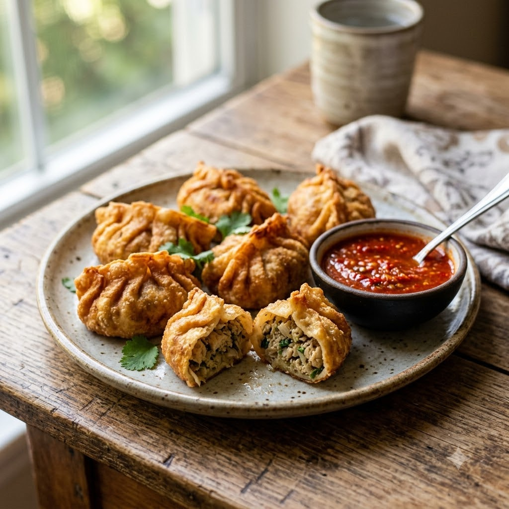

Momo to Fried Momo (Steam then Crisp)

Momo to Fried Momo (Steam then Crisp)
Chef Magic (Steam) → Airfryer (Fry, for a crisp finish) 190°C — Steam 12 min + Fry 7 min — makes ~15
🔥 Airfryer🧑🍳 Chef Magic
Ingredients
- 15 momo wrappers
- 1 cup finely chopped vegetables or minced chicken
- 1 tsp soy sauce
- 1/2 tsp ginger-garlic paste (adrak-lehsun paste)
- Salt & pepper to taste
- Oil spray
Method
1Preheat: When you reach the Airfryer step, preheat it to 190°C for 4 minutes before adding the food.
2Mix filling ingredients and stuff into wrappers, pleating to seal.
3Steam in Chef Magic (100°C steam, paddle off) using the steamer tray for 11 minutes until wrappers turn glossy.
4Spray steamed momos lightly with oil and arrange in the Airfryer basket.
5Air-fry at 190°C for 7 minutes until the outside turns crisp and lightly golden.
Tip: Steaming first keeps the filling juicy while the air fryer finish adds the crunch steaming alone can’t.